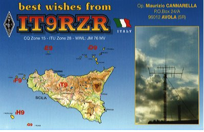

Flash ! DX


 

|
|
|
|

|
|
|
[Back Issues Nov.2017]
TIME:UTC(JST-09:00)
Report from JA1RJU(PM95sq)
30.Nov.2017(15:00b)
Report from JA1RJU(PM95sq)
29.Nov.2017(15:00b)
Report from JA1RJU(PM95sq)
28.Nov.2017(15:00b)
Report from JA1RJU(PM95sq)
27.Nov.2017(15:00b)
Report from JA1RJU(PM95sq)
26.Nov.2017(15:00b)
Report from JA1RJU(PM95sq)
25.Nov.2017(15:00b)
Report from JA1RJU(PM95sq)
24.Nov.2017(15:00b)
Report from JA1RJU(PM95sq)
23.Nov.2017(15:00b)
Report from JA1RJU(PM95sq)
22.Nov.2017(15:00b)
Report from JA1RJU(PM95sq)
21.Nov.2017(15:00b)
Report from JA1RJU(PM95sq)
20.Nov.2017(15:00b)
Report from JA1RJU(PM95sq)
19.Nov.2017(15:00b)
Report from JA1RJU(PM95sq)
18.Nov.2017(15:00b)
Report from JA1RJU(PM95sq)
17.Nov.2017(15:00c)
DU7/PA0HIP 05:5030- 50.313-1461 WSJT FT8 -11dB CQ(PK10)
DU7/PA0HIP 05:5200- 50.313-1447 WSJT FT8 -10dB
DU7/PA0HIP 05:5530- 50.313-1441 WSJT FT8 -10dB
Report from JA1RJU(PM95sq)
16.Nov.2017(15:00b)
Report from JA1RJU(PM95sq)
15.Nov.2017(15:00b)
Report from JA1RJU(PM95sq)
14.Nov.2017(15:00b)
ZL1SG 05:3100- 50.313-**** WSJT FT8 -10dB into JA5
Report from JA1RJU(PM95sq)
13.Nov.2017(15:00b)
VP8EME 17:37 50.193 WSJT JT65a -22dB(EME) into JA2
Report from JA1RJU(PM95sq)
12.Nov.2017(15:00c)
VK2BLS 05:1630 50.313-1604 WSJT FT8 -14dB QSO with JA2
VK2BLS 05:1800-193 50.313-1077 WSJT FT8 -05dB QSO with JA5
VK2EFM 05:2230-250 50.313-1601 WSJT FT8 -12dB QSO with JA2
VK2ZQ 05:2600 50.313-1379 WSJT FT8 -16dB CQ(QF55)
VK2EFM 05:2600 50.313-1598 WSJT FT8 -16dB CQ(QF56)
VK2ZQ 05:2700-730 50.313-1378 WSJT FT8 -15dB QSO with JA2
VK2EFM 05:2700- 50.313-1597 WSJT FT8 -15dB CQ
VK2EFM 05:2730- 50.313-1597 WSJT FT8 -14dB CQ
VK2EFM 05:2830- 50.313-1040 WSJT FT8 -14dB QSO with JA5
VK2ZQ 05:3000- 50.313-1597 WSJT FT8 -13dB QSO with JA3
VK2EFM 05:3030- 50.313-1793 WSJT FT8 -10dB QSO with JA3
VK2BLS 05:3100- 50.313-1793 WSJT FT8 -12dB CQ(QF55)
VK2ZQ 05:3130- 50.313-1597 WSJT FT8 -16dB QSO with JA3
VK2EFM 05:3230- 50.313-1039 WSJT FT8 -16dB QSO with JA5
VK2ZQ 05:3600- 50.313-1599 WSJT FT8 -13dB QSO with JA2
VK2BLS 05:3630- 50.313-1342 WSJT FT8 -08dB CQ
VK2EFM 05:3700- 50.313-1034 WSJT FT8 -12dB CQ
VK2ZQ 05:3700- 50.313-1600 WSJT FT8 -09dB CQ
VK2BLS 05:3730- 50.313-1343 WSJT FT8 -11dB QSO with JA3
VK2EFM 05:3800- 50.313-1034 WSJT FT8 -11dB CQ
VK2ZQ 05:3830- 50.313-1599 WSJT FT8 -11dB CQ
VK3HY 06:0500- 50.313-914 WSJT FT8 -15dB CQ(QF22)
VK3HY 06:0530- 50.313-914 WSJT FT8 -16dB QSO with JA1
VK3HY 06:0900- 50.313-913 WSJT FT8 -16dB CQ
VK3HY 06:1100- 50.313-913 WSJT FT8 -14dB CQ
VK3HY 06:1430- 50.313-914 WSJT FT8 -14dB CQ
VK3HY 06:1630- 50.313-915 WSJT FT8 -17dB QSO with JA2
Report from JA1RJU(PM95sq)
11.Nov.2017(15:00c)
VK6KXW 05:4330- 50.313-587 WSJT FT8 -14dB CQ(OF87)
VK6KXW 05:4400 50.313-588 WSJT FT8 -17dB CQ
VK6KXW 05:4500- 50.313-1780 WSJT FT8 -15dB CQ
VK6KXW 05:4830 50.313-1731 WSJT FT8 -13dB CQ
VK6KXW 05:4930 50.313-1730 WSJT FT8 -14dB QSO with JA5FFJ
VK6KXW 05:5030 50.313-1731 WSJT FT8 -14dB CQ
VK6KXW 05:5645- 50.313-1731 WSJT FT8 -16dB QSO with JH3CUL
VK6KXW 05:5845- 50.313-1730 WSJT FT8 -13dB CQ
VK6KXW 05:5945- 50.313-1730 WSJT FT8 -12dB QSO with DU7/PA0HIP
DU7/PA0HIP 06:0045- 50.313-1730 WSJT FT8 -12dB QSO with VK6KXW
VK6KXW 06:0130- 50.313-1729 WSJT FT8 -14dB QSO with VK8MS
VK6KXW 06:0300-123 50.313-1729 WSJT FT8 -13dB CQ
VK6KXW 06:1230- 50.313-1727 WSJT FT8 -13dB CQ
VP8EME 15:23 50.190 WSJT JT65a -25dB(EME) QSO with JA7
Report from JA1RJU(PM95sq)
10.Nov.2017(15:00b)
Report from JA1RJU(PM95sq)
09.Nov.2017(15:00c)
ZL1RQ 04:37 50.313 WSJT FT8 -15dB into JA5
Report from JA1RJU(PM95sq)
08.Nov.2017(15:00b)
Report from JA1RJU(PM95sq)
07.Nov.2017(15:00c)
W7JW 11:48 50.182 WSJT JT65a -22dB(EME) QSO with JA1
Report from JA1RJU(PM95sq)
06.Nov.2017(15:00b)
Report from JA1RJU(PM95sq)
05.Nov.2017(15:00b)
Report from JA1RJU(PM95sq)
04.Nov.2017(15:00b)
VK2EFM 05:54 50.313-**** WSJT FT8 into JA1/2
Report from JA1RJU(PM95sq)
03.Nov.2017(15:00b)
K1SIX 10:03 50.185 WSJT JT65a -21dB(EME) QSO with JA2
Report from JA1RJU(PM95sq)
02.Nov.2017(15:00c)
VK2ZQ 05:39.00 50.313-1438 WSJT FT8 -06dB CQ(QF55)
VK2ZQ 05:40.30 50.313-1439 WSJT FT8 -11dB/-01dB(QSO=10W)
VK2BLS 05:44.30 50.313-1202 WSJT FT8 -01dB Calling to JA7(QF55)
VK2BLS 05:45.30 50.313-1202 WSJT FT8 -07dB QSO with JA7
VK2ZQ 05:47.30 50.313-1439 WSJT FT8 -07dB CQ(QF55)
VE1JF 07:50 50.192 WSJT JT65a -20dB(EME) QSO with JA2
Report from JA1RJU(PM95sq)
01.Nov.2017(15:00b)
W7GJ 07:44- 50.190 WSJT JT65a -25dB(EME) QSO with JA2/7